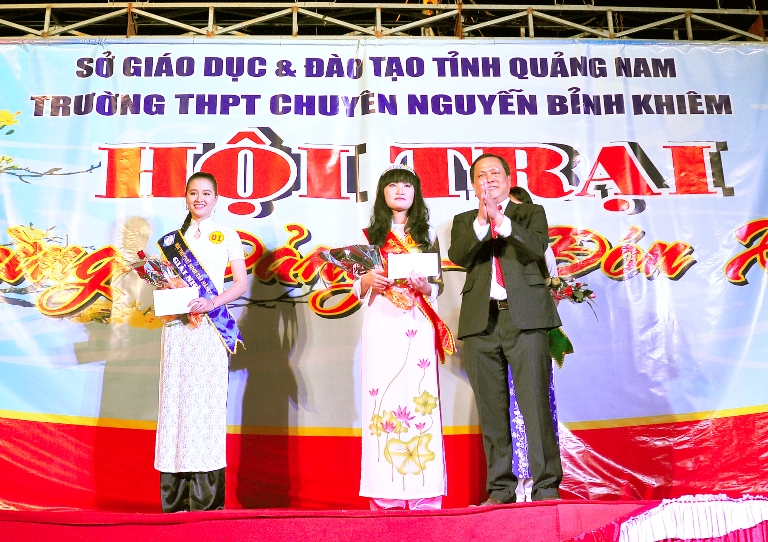

TRƯỜNG THPT CHUYÊN NGUYỄN BỈNH KHIÊM TỔ CHỨC HỘI TRẠI MỪNG ĐẢNG-ĐÓN XUÂN 2013.

Lần cập nhật cuối lúc Thứ năm, 21 Tháng 2 2013 10:09 Viết bởi Administrator Thứ năm, 21 Tháng 2 2013 10:06

Hướng tới kỷ niệm 82 năm ngày thành lập Đoàn TNCS. Hồ Chí Minh (26/3/1931 – 26/3/2013) kỷ niệm 83 năm ngày thành lập Đảng CSVN (3/2/1930 – 3/2/2013).
Nhằm tuyên truyền giáo dục cho học sinh về vai trò lãnh đạo của Đảng trong thời kỳ mới; thực hiện có hiệu quả cuộc vận động “Học tập và làm theo tấm gương đạo đức Hồ Chí Minh”. Từ đó, học sinh tiếp tục rèn luyện, cống hiến và xác định trách nhiệm của tuổi trẻ trong công cuộc xây dựng và bảo vệ Tổ quốc Việt Nam xã hội chủ nghĩa;
Tạo điều kiện cho học sinh có sân chơi lành mạnh, vui khỏe, giao lưu học tập kinh nghiệm lẫn nhau;
Giúp cho học sinh môi trường hoạt động ngoại khóa, giáo dục kỹ năng sống, nhằm tạo cho tập thể và cá nhân biết xây dựng kế hoạch, tổ chức thực hiện có hiệu quả các hoạt động, đảm bảo đúng yêu cầu của nhà trường đề ra, với chủ đề : Vui khỏe, đoàn kết, tiết kiệm, hiệu quả và an toàn. Trường THPT chuyên Nguyễn Bỉnh Khiêm tổ chức hội trại Mừng Đảng – Đón Xuân và cuộc thi chung kết Văn nghệ, Nữ sinh tài năng. Tại buổi lễ khai mạc hội trại, Đoàn viên thanh niên đã quyên góp 3.500.000(Ba triệu năm trăm ngàn đồng) để ủng hộ xây dựng nhà tình nghĩa tại phường Tân Thạnh. Hội trại lần này thật sự là sân chơi bổ ích không chỉ là giao lưu học hỏi mà còn giúp cho Đoàn viên thanh niên có điều kiện trau dồi kỹ năng sống để tự tin bước vào đời.
- 25/03/2013 10:36 - ĐOÀN TRƯỜNG THPT CHUYÊN NGUYỄN BỈNH KHIÊM TỔ CHỨC …
- 21/03/2013 08:06 - TRƯỜNG THPT CHUYÊN NGUYỄN BỈNH KHIÊM TỔ CHỨC HỘI T…
- 20/03/2013 08:34 - ĐOÀN TRƯỜNG THPT CHUYÊN NGUYỄN BỈNH KHIÊM – QUẢNG …
- 15/03/2013 10:02 - CÔNG ĐOÀN TỔ CHỨC CÁC HOẠT ĐỘNG KỈ NIỆM NGÀY QTPN …
- 04/03/2013 07:44 - TỔ NGỮ VĂN TỔ CHỨC HỘI THI THUYẾT TRÌNH VĂN HỌC NĂ…
- 29/01/2013 07:53 - Giấy mời Hội trại Mừng Đảng, Đón Xuân
- 12/12/2012 23:14 - TRƯỜNG THPT CHUYÊN NGUYỄN BỈNH KHIÊM TỔ CHỨC SINH …
- 07/12/2012 16:31 - HOẠT ĐỘNG CỦA CÂU LẠC BỘ TIẾNG ANH-
- 05/12/2012 21:59 - Giới thiệu Luật Công đoàn sửa đổi 2012
- 05/12/2012 06:25 - Trung tâm Phát triển nguồn nhân lực CLC làm việc v…